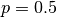
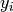

Syntax:
CREATE STREAM stream_name FROM SLIDING WINDOW
(SIZE window_length ADVANCE step_size { TIME | TUPLES })
OVER input_stream WITH agg_fun(params) [ AS alias ] [, ... ]
[ WHERE pre_filter ] [ HAVING post_filter ]
Examples:
jubaql> CREATE STREAM tokugawa FROM SLIDING WINDOW
(SIZE 4 ADVANCE 2 TUPLES)
OVER ds WITH maxval(label) AS era
HAVING era = 'tokugawa'
CREATE STREAM
jubaql> CREATE STREAM sitstream FROM SLIDING WINDOW
(SIZE 10 ADVANCE 2 TIME)
OVER input WITH stddev(dx), quantile(0.3, v)
WHERE activity = 'sitting'
CREATE STREAM
CREATE STREAM FROM SLIDING WINDOW は入力ストリームに対してスライディングウインドウを用いて集約した値から、新たなストリームを作成します。出力されるアイテム１つが入力ストリームの１つのウインドウに対応します。
stream_name はこのストリームを識別するためにユーザが決定する文字列です。window_length はウインドウに含まれるアイテムの数を指定する整数です。カウントベースの場合はアイテムの個数を、タイムスタンプベースの場合は最初のアイテムと最後のアイテムの間の時間を秒単位で指定します。step_size は連続した２つのウインドウの開始時刻の差を指定します。カウントベースではアイテムの個数を指定し、タイムスタンプベースでは秒単位で指定します集約関数の名前です。 params は関数に用いる入力パラメータのリストです。すべての関数において、最後のパラメータが集約する 値/列/式になります。それ以前のパラメータは関数によって異なり、関数の挙動を制御するものになります。使用可能な関数については次のセクションを参照してください。 alias は集約した値を保持する列の名前を指定します。 alias が与えられなかった場合、 agg_fun が用いられます。 agg_fun(params) [ AS alias ] は入力ストリームの異なる列のデータを集約するために、複数回使用することができます。pre_filter は Spark SQLの SELECT 文で使える WHERE 句のようなフィルタリングを記述できます。入力ストリームのうち条件に合致したデータのみをウインドウ計算に用います。このことはウインドウ幅10のカウントベースのストリームではフィルタリング後のアイテムが10個ウインドウに含まれることを意味します。post_filter はSpark SQLの SELECT 文で使える WHERE 句のようなフィルタリングを記述できます。指定された条件に合致した集約値のみを出力ストリームに出力するようにできます。なお、出力ストリームの名前( alias もしくは agg_fun )を使用しなければならないことに注意してください。CREATE STREAM FROM SELECT 文が正常に処理されるとユーザは strem_name で指定した名前を他の文から使用することができるようになります。
以下の集約関数が CREATE STREAM FROM SLIDING WINDOW 文の WITH agg_fun(expression) AS alias 句で使用可能です。
最後のパラメータ以外は文の発行時点で計算できるものでなければなりません。したがって他のストリームの列の参照はできません。
avg(_): Doublestddev(_): Doublequantile(p: Double, _): Double[0.0, 1.0, 2.0, 3.0] の中央値など）は大きい数値を返す。p: 分位数を指定するパラメータ ( is the median)quantile(expr) は quantile(0.5, expr) と同義linapprox(_): Map[String, Double]"a" (傾き :math: a に対応 ) と "b" (切片 に対応)を持つMap。 番目(0から数え始める)の値  をデータ点: math:(i, y_i) と解釈して線形近似を行う。入力データが1つの場合、 ともに NaN となります。fourier(_): Map[String, Array[Double]]"re" と "im" を持つmap。それぞれ実数部と虚数部に対応する。入力データの数は2の累乗の必要があり、足りない場合には0で補完されます。 係数は Apache Commons Mathの FastFourierTransformer.transformInPlace(data, DftNormalization.STANDARD, TransformType.INVERSE) で計算されます。wavelet(_): Array[Double]histogram(lowestUpperBound: Double, highestLowerBound: Double, numBins: Int, _): Array[Double]lowestUpperBound: 最小のビンの上限highestLowerBound: 最大のビンの下限numBins: ビンの個数histogram(lowestUpperBound, highestLowerBound, expr) は histogram(lowestUpperBound, highestLowerBound, 10, expr) と同義histogram(numBins, expr) は histogram(0.1, 0.9, numBins, expr) 同義histogram(expr) は histogram(0.1, 0.9, 10, expr) と同義concat(separator: String, _): Stringseparator で区切られた全入力値の結合。separator: 2つの入力文字列の間を区切る文字列concat(expr) は concat(" ", expr) と同義maxelem(_): StringCREATE STREAM FROM SLIDING WINDOWS は並列化が困難となっています。この理由は２つのウインドウにオーバーラップがあった場合、そのウインドウを処理しているworkerにオーバーラップを知らせなければならないからです。workerが異なるマシン上にあった場合、オーバーラップしているアイテムをネットワーク越しに送る必要が生じ、スケールアウトの妨げとなります。CREATE STREAM FROM SLIDING WINDOWS` はDStreamのバッチの境界をまたぐ状態を持ち得ます。これは次のバッチに含まれるデータを用いてウインドウ処理を完了させる場合があるからです。このため、Spark Streamingの ``pdateStateByKey() を用いて、ディスクに状態を書きだす必要が生じています。